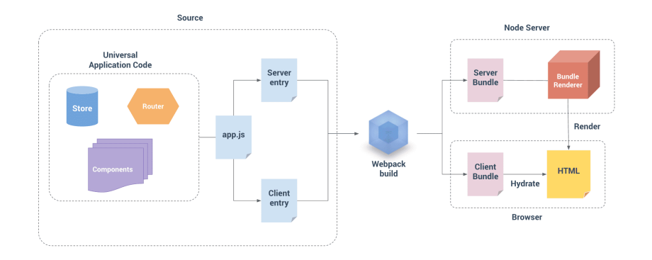
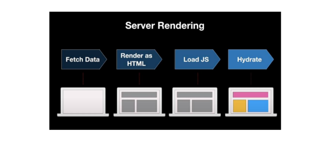
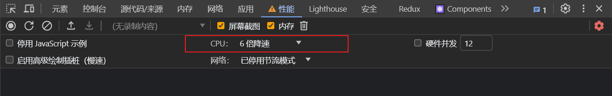

Hook 和 Class 的对比
Hook 是 React 16.8 的新增特性，它可以让我们在不编写 class 的情况下使用 state 以及其他的 React 特性（比如生命周期）。
class 组件相对于函数式组件的优势：
-
class 组件可以定义自己的 state，用来保存组件自己内部的状态；函数式组件不可以，因为函数每次调用都会产生新的临时变量；
-
class 组件有自己的生命周期，我们可以在对应的生命周期中完成自己的逻辑；
比如在 componentDidMount 中发送网络请求，并且该生命周期函数只会执行一次；函数式组件在学习 hooks 之前，如果在函数中发送网络请求，意味着每次重新渲染都会重新发送一次网络请求；
- class 组件可以在状态改变时只会重新执行 render 函数以及我们希望重新调用的生命周期函数 componentDidUpdate 等；函数式组件在重新渲染时，整个函数都会被执行；
所以，在 Hook 出现之前，对于上面这些情况我们通常都会编写 class 组件。
但是 Class 组件存在问题：
- 复杂组件变得难以理解，难以拆分
- 组件复用状态很难
Hook 的出现，可以解决上面提到的这些问题，因为 Hook 可以让我们在不编写 class 的情况下使用 state 以及其他的 React 特性。
Hook 的使用场景：
- 基本可以代替我们之前所有使用 class 组件的地方；
- 旧的项目并不需要直接将所有的代码重构为 Hooks，因为它完全向下兼容，你可以渐进式的来使用它；
- Hook 只能在函数组件中使用，不能在类组件，或者函数组件之外的地方使用；
Hook 就是 JavaScript 函数，这个函数可以帮助你钩入（hook into） React State 以及生命周期等特性；
两个使用规则：
-
只能在函数最外层调用 Hook。不要在循环、条件判断或者子函数中调用。
-
只能在 React 的函数组件中调用 Hook。
-
在普通函数里面不能使用 Hook，但在自定义 Hook 中可以使用 React 的 Hook。
自定义 Hook：以 use 开头的函数
::: tip
Hook 指的类似于 useState、 useEffect 这样的函数 。
Hooks 是对这类函数的统称。
:::
useState
import { memo, useState } from 'react';
function App() {
const [count, setCount] = useState(0);
return (
<div>
<h1>Count:{count}</h1>
<button onClick={e => setCount(count + 1)}>+</button>
<button onClick={e => setCount(count - 1)}>-</button>
</div>
);
}
export default memo(App);useState 会帮助我们定义一个 state 变量，useState 是一种新方法，它与 class 里面的 this.state 提供的功能完全相同。 一般来说，在函数退出后变量就会”消失”，而 state 中的变量会被 React 保留。
useState 接受唯一一个参数，在第一次组件被调用时使用来作为初始化值（如果没有传递参数，那么初始化值为 undefined）。
useState 的返回值是一个数组，我们可以通过数组的解构，来完成赋值会非常方便。
useEffect
Effect Hook 可以完成一些类似于 class 中生命周期的功能。
事实上，类似于网络请求、手动更新 DOM、一些事件的监听，都是 React 更新 DOM 的一些副作用（Side Effects），所以对于完成这些功能的 Hook 被称之为 Effect Hook；
通过 useEffect 的 Hook，可以告诉 React 需要在渲染完成后需要执行某些操作，如网络请求或者 DOM 操作等；
useEffect 要求我们传入一个回调函数，无论是在 React 第一次渲染之后，还是每次更新之后，都会回调这个函数；
import { memo, useState, useEffect } from 'react';
function App() {
const [count, setCount] = useState(0);
useEffect(() => {
document.title = count;
});
return (
<div>
<h1>Count :{count}</h1>
<button onClick={e => setCount(count + 1)}>+</button>
<button onClick={e => setCount(count - 1)}>-</button>
</div>
);
}
export default memo(App);在 class 组件的编写过程中，某些副作用的代码，我们需要在 componentWillUnmount 中进行清除，比如事件总线或 Redux 中手动调用 subscribe；
useEffect 传入的回调函数本身可以有一个返回值，这个返回值是一个回调函数，会在组件重新渲染或者组件卸载的时候执行。
import { useEffect } from 'react';
function App() {
useEffect(() => {
console.log('订阅');
return () => {
console.log('取消订阅');
};
});
return <div>Count</div>;
}::: tip 为什么要在 effect 中返回一个函数
这是 effect 可选的清除机制。
每个 effect 都可以返回一个清除函数，如此可以将添加和移除订阅的逻辑放在一起； 它们都属于 effect 的一部分；
:::
使用 Hook 的其中一个目的就是解决 class 中生命周期经常将很多的逻辑放在一起的问题。
function App() {
useEffect(() => {
// redux中的数据监听
});
useEffect(() => {
// eventBus
});
return <div>Count</div>;
}当我们使用多个 Effect 时，React 将按照 Effect 声明的顺序依次调用组件中的每一个 Effect。
Effect 性能优化
默认情况下，useEffect 的回调函数会在每次渲染时都重新执行，但是这会导致两个问题：
- 某些代码执行一次即可，比如网络请求、订阅和取消订阅等
- 多次执行也会导致一定的性能问题；
useEffect 实际上有两个参数：
- 执行的回调函数；
- 该 useEffect 在哪些 state 发生变化时，才重新执行；（受谁的影响）
function App() {
const [count, setCount] = useState(0);
useEffect(() => {
// 当count发生变化时才会重新执行
console.log(count);
}, [count]);
return (
<div>
<h1>Count :{count}</h1>
<button onClick={e => setCount(count + 1)}>+</button>
<button onClick={e => setCount(count - 1)}>-</button>
</div>
);
}::: tip
如果一个函数我们不希望依赖任何的内容时，即只执行一次，也可以传入一个空的数组 []
useEffect(() => {
// 只执行一次
return () => {
// 组件卸载时才执行
};
}, []);:::
useContext
在之前的开发中，我们要在组件中使用共享的 Context 有两种方式：
- 类组件可以通过
类名.contextType = MyContext方式，在类中获取 context； - 多个 Context 或者在函数式组件中通过
MyContext.Consumer方式共享 context；
但是多个 Context 共享时的方式会存在大量的嵌套
<div>
<User.Consumer>
{value => {
return (
<div>
<Theme.Consumer>{value => {}}</Theme.Consumer>
</div>
);
}}
</User.Consumer>
</div>我们可以使用 useContext 来替换这种操作
function App() {
const user = useContext(UserContext);
const theme = useContext(ThemeContext);
return <div></div>;
}当组件上层最近的MyContext.Provider更新时，该 Hook 会触发重新渲染，并使用最新传递给 MyContext provider 的 context value 值。
useReducer
useReducer 是 useState 的一种替代方案。
如果 state 的处理逻辑比较复杂，我们可以通过 useReducer 来对其进行拆分；或者这次修改的 state 需要依赖之前的 state 时，也可以使用；
useCallback
useCallback 的目的是为了进行性能的优化。
function App() {
const [count, setCount] = useState(0);
function add() {
setCount(count + 1);
}
return (
<div>
<h1>Count:{count}</h1>
<button onClick={add}>+</button>
</div>
);
}上面代码中，当 count 更新的时候组件会重新渲染，因此add函数会重新定义。
function App() {
const [count, setCount] = useState(0);
const add = useCallback(() => {
setCount(count + 1);
});
return (
<div>
<h1>Count:{count}</h1>
<button onClick={add}>+</button>
</div>
);
}为了函数可以重复使用而不用多次定义，我们可以使用useCallback对add函数进行包裹。此时返回的add函数在每次渲染时就不会重新定义，但传入的函数()=>{setCount(count + 1)}仍然会重新定义。这样的写法是没有意义的，因此我们需要传入useCallback的第二个参数。
const add = useCallback(() => {
setCount(count + 1);
}, []);当我们传入一个空数组[]的时候，说明不依赖任何值，因此返回的add永远是同一个值。
从上面的代码中可以看出add函数的目标作用是将 count+1，但由于add永远是同一个值，count 只会增加一次后就不再增加了。
以下面代码为例，foo第一次执行返回的baz1执行后输出 hello，foo第二次执行返回的baz1执行后仍然输出 hello。
function foo(name) {
return function bar() {
console.log(name);
};
}
const baz1 = foo('hello');
baz1(); // hello
const baz2 = foo('world');
baz1(); // hello
baz2(); // world类似，add第一次定义时 count 的值为 0，因此执行 add等同于执行setCount(0+ 1)，会将 count 修改为 1。此时重新渲染，add第二次定义，但由于useCallback传入的第二个参数是空数组，因此add不变，里面的 count 的值仍然为add第一次定义时候的值 0。即使再次执行add，也是相当于执行setCount(0+ 1)。
简单来说，就是
useCallback的依赖不更新的时候，由于闭包会导致传入的函数中的一些变量也不会更新。具体可以搜索usecallback 闭包陷阱
因此当useCallback传入的函数中存在一些外面的变量的时候，需要把这些变量添加到依赖中。
function App() {
const [count, setCount] = useState(0);
const add = useCallback(() => {
setCount(count + 1);
}, [count]);
return (
<div>
<h1>Count:{count}</h1>
<button onClick={add}>+</button>
</div>
);
}通常使用 useCallback 的目的是不希望子组件进行多次渲染，并不是为了函数进行缓存；
const Increment = memo(function (props) {
console.log('Increment组件重新渲染');
return <button onClick={props.addFun}>Increment:+1</button>;
});
function App() {
const [count, setCount] = useState(0);
const [message, setMessage] = useState('HHH');
const add = useCallback(() => {
setCount(count + 1);
}, [count]);
return (
<div>
<h1>Count:{count}</h1>
<Increment addFun={add} />
<h1>Message:{message}</h1>
<button onClick={() => setMessage(Math.random())}>reverse</button>
</div>
);
}在上面代码中，如果 add 是普通函数，当修改 Message 内容会导致 Increment 组件重新渲染，因为参数 add 函数重新定义了；如果 add 是 useCallback 返回的函数则不会有这种问题。
所以当需要将一个函数传递给子组件时，最好使用useCallback进行优化，并将优化后的函数传递给子组件。
假设 Increment 组件中除了 button 还有其它子组件，当 Count 发生变化时，Increment 组件中的其它子组件也会重新渲染，但这是没有必要的。
为了优化这个问题，就需要当 count 变化时，传入的是同一个函数
const Increment = memo(function (props) {
console.log('Increment组件重新渲染');
return (
<div>
<button onClick={props.addFun}>Increment:+1</button>
{/* 其它子组件 */}
</div>
);
});做法 1：将 count 依赖移除，但会造成闭包陷阱，这一点前面已经介绍过了
const add = useCallback(() => {
setCount(count + 1);
}, []);做法 2：使用 useRef
const [count, setCount] = useState(0);
const countRef = useRef();
countRef.current = count;
const add = useCallback(() => {
setCount(countRef.current + 1);
}, []);useMemo
useMemo 实际的目的也是为了进行性能的优化。
useMemo 返回的也是一个记忆的值；在依赖不变的情况下，多次定义的时候，返回的值是相同的；
function calculate(num) {
let total = 0;
for (let i = 0; i < num; i++) {
total += i;
}
return total;
}
function App() {
const [count, setCount] = useState(0);
return (
<div>
<h1>计算结果:{calculate(50)}</h1>
<h1>count:{count}</h1>
<button onClick={e => setCount(count + 1)}>+</button>
</div>
);
}当我们点击按钮的时候，calculate 会重新执行一遍，但明显没必要重新执行。我们可以使用useMemo
function App() {
const [count, setCount] = useState(0);
let result = useMemo(() => {
return calculate(50);
}, []);
return (
<div>
<h1>计算结果:{result}</h1>
<h1>count:{count}</h1>
<button onClick={e => setCount(count + 1)}>+</button>
</div>
);
}- 进行大量的计算操作，根据是否有必要每次渲染时都重新计算，使用 useMemo 进行性能的优化；
- 对子组件传递相同内容的对象时，使用 useMemo 进行性能的优化
useRef
useRef 返回一个 ref 对象，返回的 ref 对象在组件的整个生命周期保持不变。
获取 DOM 元素
function App() {
const h1Ref = useRef();
return (
<div>
<h1 ref={h1Ref}>Hello</h1>
<button onClick={e => console.log(h1Ref.current)}>but</button>
</div>
);
}使用 ref 保存上一次的某一个值
可以看 usecallback 的最后一部分
useImperativeHandle
先来回顾一下 ref 和 forwardRef 的结合使用：通过 forwardRef 可以将 ref 转发到子组件，子组件拿到父组件中创建的 ref，绑定到自己的某一个元素中；
const Hello = memo(
forwardRef((props, ref) => {
return <input type='text' ref={ref} />;
})
);
function App() {
const h1Ref = useRef();
const inputRef = useRef();
function handleDom() {
console.log(inputRef.current);
}
return (
<div>
<h1 ref={h1Ref}>Hello</h1>
<Hello ref={inputRef} />
<button onClick={handleDom}>DOM操作</button>
</div>
);
}forwardRef 的做法本身没有什么问题，但是我们是将子组件的 DOM 直接暴露给了父组件会带来某些不可控的问题；因此我们可以通过 useImperativeHandle 暴露固定的操作。
通过 useImperativeHandle 的 Hook，将传入的 ref 和 useImperativeHandle 第二个参数返回的对象绑定到了一起；所以在父组件中，使用 inputRef.current 时，实际上使用的是返回的对象；
const Hello = memo(
forwardRef((props, ref) => {
const inputRef = useRef();
// 子组件对父组件传入的ref进行处理
useImperativeHandle(ref, () => {
return {
focus() {
inputRef.current.focus();
}
};
});
return <input type='text' ref={inputRef} />;
})
);
function App() {
const h1Ref = useRef();
const inputRef = useRef();
function handleDom() {
inputRef.current.focus();
}
return (
<div>
<h1 ref={h1Ref}>Hello</h1>
<Hello ref={inputRef} />
<button onClick={handleDom}>DOM操作</button>
</div>
);
}useLayoutEffect
useLayoutEffect 看起来和 useEffect 非常的相似，事实上他们也只有一点区别而已：
- useEffect 会在渲染的内容更新到 DOM 上后执行，不会阻塞 DOM 的更新；
- useLayoutEffect 会在渲染的内容更新到 DOM 上之前执行，会阻塞 DOM 的更新；
function App() {
useEffect(() => {
console.log('useEffect'); // 第三步
});
useLayoutEffect(() => {
console.log('useLayoutEffect'); // 第二步
});
console.log('render'); // 第一步
return <div>Hello</div>;
}自定义 Hook
打印生命周期
function useLogLife(name) {
useEffect(() => {
console.log(name + '组件创建');
return () => {
console.log(name + '组件销毁');
};
}, []);
}
const Home = memo(() => {
useLogLife('Home');
return <div>Home</div>;
});
const About = memo(() => {
useLogLife('About');
return <div>About</div>;
});
const App = memo(() => {
useLogLife('APP');
return (
<div>
App
<Home />
<About />
</div>
);
});获取 Context
import { UserContext, TokenContext } from './context';
function useUserToken() {
const user = useContext(UserContext);
const token = useContext(TokenContext);
return [user, token];
}const App = memo(() => {
const [user, token] = useUserToken();
return <div>App</div>;
});获取滚动位置
function useScrollPosition() {
const [scrollX, setScrollX] = useState(0);
const [scrollY, setScrollY] = useState(0);
useEffect(() => {
function handle() {
setScrollX(window.scrollX);
setScrollY(window.scrollY);
}
window.addEventListener('scroll', handle);
return () => {
window.removeEventListener('scroll', handle);
};
}, []);
return [scrollX, scrollY];
}
const App = memo(() => {
const [scrollX, scrollY] = useScrollPosition();
return <div>App</div>;
});localStorage 数据存储
function useLocalStorage(key) {
const [data, setData] = useState(() => {
const item = localStorage.getItem(key);
return item ? JSON.parse(item) : '';
});
useEffect(() => {
localStorage.setItem(key, JSON.stringify(data));
}, []);
return [data, setData];
}
const App = memo(() => {
const [token, setToken] = useLocalStorage('token');
return <div>App</div>;
});useSelector，useDispatch
在之前的 redux 开发中，为了让组件和 redux 结合起来，我们使用了 react-redux 中的 connect。但是这种方式必须使用高阶函数结合返回的高阶组件；并且必须编写：mapStateToProps 和 mapDispatchToProps 映射的函。connect(mapStateToProps,mapDispatchToProps)(APP)
在 Redux7.1 开始，提供了 Hook 的方式，再也不需要编写 connect 以及对应的映射函数了。
import { configureStore, createSlice } from '@reduxjs/toolkit';
const counterSlice = createSlice({
name: 'counter',
initialState: {
count: 99
},
reducers: {
addAction(state, { payload }) {
state.count += payload;
}
}
});
const store = configureStore({
reducer: {
counter: counterSlice.reducer
}
});
export const { addAction } = counterSlice.actions;
export default store;import store from './store';
import { Provider } from 'react-redux';
const root = ReactDOM.createRoot(document.getElementById('root'));
root.render(
<Provider store={store}>
<App />
</Provider>
);import { useSelector, useDispatch, shallowEqual } from 'react-redux';
import { addAction } from './store';
const App = memo(() => {
const { count } = useSelector(
state => ({
count: state.counter.count
}),
shallowEqual
);
const dispatch = useDispatch();
function add(num) {
dispatch(addAction(num));
}
return <div>App</div>;
});useSelector 的作用是将 state 映射到组件中：
- 参数一：将 state 映射到需要的数据中；
- 参数二：可以进行比较来决定是否组件重新渲染，一般直接使用
shallowEqual即可；
useId
::: info SSR, CSR
-
SSR（Server Side Rendering，服务端渲染）
指的是页面在服务器端已经生成了完成的 HTML 页面结构，不需要浏览器解析。 早期的服务端渲染包括 PHP、JSP、ASP 等方式。
-
CSR（Client Side Rendering，客户端渲染）
我们开发的 SPA 页面通常依赖的就是客户端渲染。
:::
::: info SSR 同构应用
一套代码既可以在服务端运行又可以在客户端运行，这就是同构应用。
同构是一种 SSR 的形态，是现代 SSR 的一种表现形式。


:::
::: info hydration
在进行 SSR 时，我们的页面会呈现为 HTML。但仅 HTML 不足以使页面具有交互性。例如，浏览器端 JavaScript 为零的页面不能是交互式的（没有 JavaScript 事件处理程序来响应用户操作，例如单击按钮）。
为了使我们的页面具有交互性，除了在 Node.js 中将页面呈现为 HTML 之外，我们的 UI 框架（Vue/React/…）还在浏览器中加载和呈现页面。（它创建页面的内部表示，然后将内部表示映射到我们在 Node.js 中呈现的 HTML 的 DOM 元素。）
这个过程称为 hydration。
hydration 是同构的某一过程。
:::
useId 是一个用于生成横跨服务端和客户端的稳定的唯一 ID 的同时避免 hydration 不匹配的 hook。
- useId 是用于 react 的同构应用开发的，前端的 SPA 页面并不需要使用它；
- useId 可以保证应用程序在客户端和服务器端生成唯一的 ID，这样可以有效的避免通过一些手段生成的 id 不一致，造成 hydration mismatch；
useTransition
官方解释：返回一个状态值表示过渡任务的等待状态，以及一个启动该过渡任务的函数。
告诉 react 对于某部分任务的更新优先级较低，可以稍后进行更新。
以下面代码为例：
通过 faker 生成一些随机人名，在页面进行展示；当输入框用来搜索人名
import React, { memo, useState } from 'react';
import { faker } from '@faker-js/faker';
const names = [];
for (let i = 0; i < 10000; i++) {
names[i] = faker.person.fullName();
}
const App = memo(() => {
const [showNames, setShowNames] = useState(names);
function change(event) {
setShowNames(names.filter(item => item.includes(event.target.value)));
}
return (
<div>
<input type='text' onChange={change} />
{showNames.map((name, index) => {
return <li key={index}>{name}</li>;
})}
</div>
);
});可以通过控制台降低 CPU 的速度

此时可以明显的看到，当输入框输入内容时，不是先显示输入的内容而是会等待change函数完成后输入框才显示内容。
正确的做法应该是立即显示输入框的内容，其它函数执行慢可以添加 loading 效果，而不是直接阻塞输入框显示内容。
const names = [];
for (let i = 0; i < 1000; i++) {
names[i] = faker.person.fullName();
}
const App = memo(() => {
const [pending, startTransition] = useTransition();
const [showNames, setShowNames] = useState(names);
function change(event) {
startTransition(() => {
setShowNames(names.filter(item => item.includes(event.target.value)));
});
}
return (
<div>
<input type='text' onChange={change} />
<h2>用户列表{pending && '：loading'}</h2>
<ul>
{showNames.map((name, index) => {
return <li key={index}>{name}</li>;
})}
</ul>
</div>
);
});useDeferredValue
官方解释：useDeferredValue 接受一个值，并返回该值的新副本，该副本将推迟到更紧急地更新之后。
useDeferredValue 的作用和 useTransition 是一样的效果，可以让我们的更新延迟。
const names = [];
for (let i = 0; i < 100; i++) {
names[i] = faker.person.fullName();
}
const App = memo(() => {
const [showNames, setShowNames] = useState(names);
const deferredShowName = useDeferredValue(showNames);
function change(event) {
setShowNames(names.filter(item => item.includes(event.target.value)));
}
return (
<div>
<input type='text' onChange={change} />
<ul>
{deferredShowName.map((name, index) => {
return <li key={index}>{name}</li>;
})}
</ul>
</div>
);
});